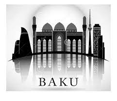

Bakı, həmçinin Böyük Bakı[3] — Azərbaycan Respublikasının paytaxtı; Abşeron yarımadasında, Xəzər dənizinin qərb sahilində yerləşir. Sahəsi 2140 km², əhalisi, 2018-ci ilin əvvəlinə qədər əhalisinin sayı 2 262 600 nəfər idi. 2022-ci ilə aid digər rəsmi mənbələrə görə, şəhərin qeyri-rəsmi əhalisi 5 milyona yaxındır.[4] Bakı, Avropa və Asiyanın kəsişməsində yerləşən dünyanın ən cazibədar və kosmopolit şəhərlərindən biridir.[5] Bakı şəhərinin tərkibinə 12 inzibati rayon, 59 qəsəbə daxildir.[6] Şəhərin mərkəzi hissəsi Bakı buxtasına pilləli enən amfiteatrda yerləşir. Bakının dəniz sahili hissəsi okean səviyyəsindən təqribən 28 m aşağıdır. Bakı rayonu ərazisində faydalı qazıntılardan neft, qaz, tikinti materialları hasil edilir; müalicə əhəmiyyətli mineral sular çıxır. Çoxlu palçıq vulkanı var. İqlimi yarı quraq və subtropikdir. Orta temperatur yanvarda 3–4 °C, iyulda isə 38-42 °C-dır. İllik yağıntı 210 mm-dir. Bakı üçün güclü şimal küləyi — xəzri və cənub küləyi — gilavar səciyyəvi xüsusiyyət daşıyır. Bakı şəhərində və Abşeron yarımadasında insanlar çox qədim zamanlardan məskunlaşmış və burada yaşayış məntəqələri yaratmışlar.[7] Buna səbəb Bakı şəhərinin fiziki-coğrafi şəraiti şimaldan-cənuba, qərbdən-şərqə gedən miqrasiya və ticarət yollarının kəsişməsi mərkəzində yerləşməsi, iqlim şəraiti və ən qədim zamanlardan yer üzünə çıxan "Nafta" adlanan yanacaq və enerji sərvəti olmuşdur.[7] Abşeron ərazisində tapılmış arxeoloji materiallar Bakının qədim yaşayış məskəni olduğunu sübut edir.[7] Pirallahı, Zığ gölü ətrafı, Şüvəlan, Mərdəkan, Əmircan və s. yerlərdə e. ə. III-I-ci minilliklərə aid arxeoloji materiallar tapılmışdır.[7] Bakının salındığı tarix dəqiq məlum deyildir.[7] Bakı Qafqazda ən əhəmiyyətli turistik məkanlardan biri sayılır. 2014-cü ildə Bakı Forbes jurnalının rusiyalılar üçün biznes qurulması sahəsində ən cəlbedici keçmiş SSRİ şəhərlərinin reytinqində top onluğa düşüb.[8] 2015-ci ildə Bakı Lonely Planet nəşrinin "Avropada səyahət edilməli ən maraqlı məkanları" reytinqində 7-ci sırada, The New York Times qəzetinin "2015-ci ildə səfər etmək üçün dünyanın ən yaxşı yerləri" reytinqində isə 51-ci yerdə qərarlaşıb.[9][10] 2016-cı ildə TripAdvisor səyahət məsləhətçisi saytının topladığı rəy sorğusunda daha çox üstünlük verilən və inkişaf etməkdə olan turizm məntəqələri siyahısında Bakı şəhəri 5-ci yerdə qərarlaşdırılıb.[11] Globalization and World Cities Research Network-un 2020-ci il hesablamalarına görə Bakı inkişafına görə Gamma+ kateqoriyasına daxil edilir və dünyanın ən inkişaf etmiş 145-ci şəhəridir.
